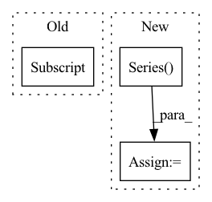

Pattern ID :32177
Before Change
targets = ["E_PBE0", "E_max_EINDO", "I_max_ZINDO", "HOMO_ZINDO", "LUMO_ZINDO", "E_1st_ZINDO", "IP_ZINDO", "EA_ZINDO", "HOMO_PBE0", "LUMO_PBE0", "HOMO_GW", "LUMO_GW", "alpha_PBE0", "alpha_SCS"]
targets_index = list(range(len(targets)))
targets2index = dict(zip(targets, targets_index))
y = df["T"].T[targets2index[target]]
drugs = df["X"]
drugs_idx = np.array(["Drug " + str(i) for i in list(range(drugs.shape[0]))])
After Change
targets = ["E_PBE0", "E_max_EINDO", "I_max_ZINDO", "HOMO_ZINDO", "LUMO_ZINDO", "E_1st_ZINDO", "IP_ZINDO", "EA_ZINDO", "HOMO_PBE0", "LUMO_PBE0", "HOMO_GW", "LUMO_GW", "alpha_PBE0", "alpha_SCS"]
import pandas as pd
df = pd.DataFrame()
df["X"] = pd.Series( [i for i in inx["X"]])
df = pd.concat([df, pd.DataFrame(inx["T"], columns = targets)], axis = 1)
df["ID"] = ["Drug " + str(i+1) for i in range(len(df))]
df.to_pickle("/Users/kexinhuang/Desktop/qm7b.pkl")
def QM8_9():In pattern: SUPERPATTERN
Frequency: 4
Non-data size: 3
Instances Fragment ID: 94125708
Project Name: mims-harvard/tdc
Commit Name: 77a6e4386efd75bd5d14443ee59d04cdfb98e3cc
Time: 2020-11-06
Author: kexinhuang@hsph.harvard.edu
File Name: data_process/QM_utils.py
M Class Name: AnonimousClass
N Class Name: AnonimousClass
M Method Name: QM7_process(3)
N Method Name: QM7_process(3)
M Parent Class:
N Parent Class:
M File Name: data_process/QM_utils.py
N File Name: data_process/QM_utils.py
M Start Line: 13
M End Line: 27
N Start Line: 17
N End Line: 25
Before Change
value.index.name = "labels"
value.reset_index(drop=False, inplace=True)
vals = gdf[name] .copy(deep=False)
if value is None:
value = cudf.DataFrame({name: [None]})
value[name] = value[name].astype(vals.dtype)After Change
value = cudf.DataFrame()
for c in selection_r:
typ = gdf[selection_l[0]].dtype if len(selection_l) == 1 else gdf[c].dtype
value[c] = cudf.Series( [None], dtype=typ)
value.index.name = "labels"
value.reset_index(drop=False, inplace=True)
if freq_threshold > 0: Fragment ID: 94125711
Project Name: nvidia/nvtabular
Commit Name: 6750183d3eb56bc6ec3e7e4ea579102c27f2e7b8
Time: 2020-08-17
Author: rzamora217@gmail.com
File Name: nvtabular/categorify.py
M Class Name: AnonimousClass
N Class Name: AnonimousClass
M Method Name: _encode(7)
N Method Name: _encode(6)
M Parent Class:
N Parent Class:
M File Name: nvtabular/categorify.py
N File Name: nvtabular/categorify.py
M Start Line: 300
M End Line: 329
N Start Line: 380
N End Line: 419
Before Change
fill_na_df = convert_float(orig_df)
else:
fill_na_df = convert_float(fill_na_other_df)
fill_na_df = fill_na_df.loc[:, fill_na_df.columns[fill_na_df.columns != target_variable]]
// estimating ARMA models just once per variable instead of every observation
if fill_ragged_edges == "ARMA":
arma_models = []After Change
else:
X_ragged[obs, :, var] = ragged_fill_series(pd.Series(X_ragged[obs, :, var]), function=fill_ragged_edges, backup_fill_method=backup_fill_method, est_series=fill_na_dataset[:,var], fitted_arma=arma_models[var], arma_full_series=for_full_arma_dataset[:,var])
else:
X_ragged[obs, :, var] = ragged_fill_series(pd.Series( X_ragged[obs, :, var]) , function=fill_ragged_edges, est_series=fill_na_dataset[:,var])
X_ragged[obs, :, var] = pd.Series(X_ragged[obs, :, var]).fillna(backup_fill_method(fill_na_dataset[:,var]))
return X_ragged Fragment ID: 94125705
Project Name: dhopp1/nowcast_lstm
Commit Name: b014fe609a25ed9a1ba9e9d8e7be448ce38f84ce
Time: 2020-12-16
Author: daniel.hopp1@gmail.com
File Name: nowcast_lstm/data_setup.py
M Class Name: AnonimousClass
N Class Name: AnonimousClass
M Method Name: gen_ragged_X(9)
N Method Name: gen_ragged_X(8)
M Parent Class:
N Parent Class:
M File Name: nowcast_lstm/data_setup.py
N File Name: nowcast_lstm/data_setup.py
M Start Line: 199
M End Line: 224
N Start Line: 206
N End Line: 253
Before Change
data = dataset.features_columns
l = len(data)
n_of_nulls = [data[c] .isna().sum() for c in data.columns]
percent_of_nulls = [it / l for it in n_of_nulls]
display = (After Change
data = dataset.features_columns
feature_importance = context.feature_importance if context.feature_importance \
else pd.Series(index=list(data.columns), dtype=object)
result_data = [[col, data[col].isna().sum(), feature_importance[col]] for col in data.columns]
result_data = pd.DataFrame(data=result_data,
columns=["Column",
"Percent of nulls in sample",
"Feature importance"]).set_index(["Column"])
result_data["Percent of nulls in sample"] = result_data["Percent of nulls in sample"] / dataset.n_samples
result_data.sort_values(by="Percent of nulls in sample")
if all(feature_importance.isna()):
result_data.drop("Feature importance", axis=1, inplace=True) Fragment ID: 94125714
Project Name: deepchecks/deepchecks
Commit Name: 0f96dcc7ceafdb87c80e0f325d570993874e1ff3
Time: 2022-08-30
Author: 67195469+Nadav-Barak@users.noreply.github.com
File Name: deepchecks/tabular/checks/data_integrity/percent_of_nulls.py
M Class Name: PercentOfNulls
N Class Name: PercentOfNulls
M Method Name: run_logic(3)
N Method Name: run_logic(3)
M Parent Class: SingleDatasetCheck,ReduceFeatureMixin
N Parent Class: SingleDatasetCheck,ReduceMixin
M File Name: deepchecks/tabular/checks/data_integrity/percent_of_nulls.py
N File Name: deepchecks/tabular/checks/data_integrity/percent_of_nulls.py
M Start Line: 56
M End Line: 66
N Start Line: 75
N End Line: 98